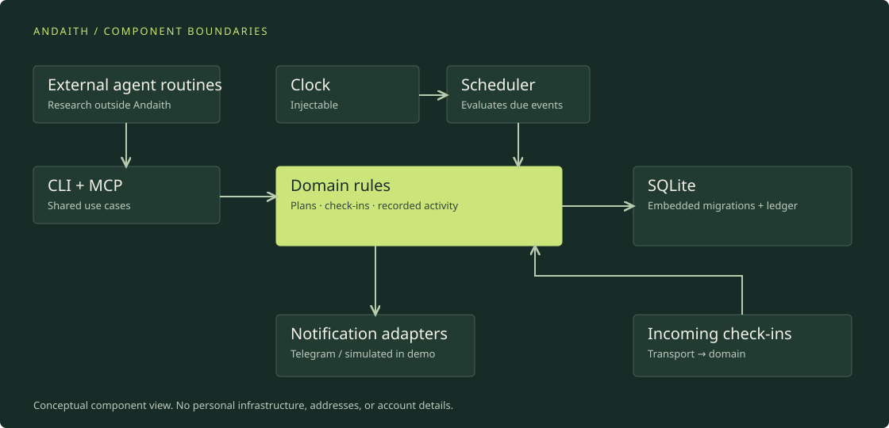

SQLite, locally
Embedded storage keeps a personal installation compact. Numbered migrations travel with the application. This choice does not establish suitability for a multi-tenant service or high write concurrency.
Andaith / Behind the project
02 / Engineering
The domain owns the rules. Interfaces separate those rules from persistence, time, and notification delivery.

Open the full architecture diagram. External research calls MCP; scheduling and recorded activity stay in the domain.
Embedded storage keeps a personal installation compact. Numbered migrations travel with the application. This choice does not establish suitability for a multi-tenant service or high write concurrency.
An injectable clock lets tests advance through reminders and response windows without waiting hours. That verifies the modeled rules; it does not reproduce every operating-system or network failure.
Blocks describe the plan; sessions and check-ins record activity. A missing response is recorded as such. It is not evidence that the activity did not happen.
The core uses the standard library. Adapters handle storage and messaging; CLI and MCP share use cases. This makes incremental changes easier to isolate, at the cost of additional interfaces to maintain.
A persistent ledger avoids ordinary repeat notifications after restart. Sending a message and recording it are separate steps, so the system does not guarantee exactly-once delivery.
External agent routines prepare digests of events, opportunities, weather, traffic, and technology advisories. Andaith exposes notify_send through MCP (Model Context Protocol) to deliver their messages. The notification path includes a daily limit and stores quiet-hour messages in an inbox.
The security digest supports manual review of information. It is not a vulnerability scanner and does not guarantee complete or accurate detection. The demo supplies invented content rather than running an external agent.
03 / Human + AI
I defined the behavior, boundaries, and acceptance rules. Claude Code had substantial freedom to propose and implement code within them.
I shaped the architecture: modularity, repository organization, and the deployment approach. I introduced Dependabot and automated checks as part of maintaining the project.
I initially read code directly. Much of the subsequent validation was experimental: deploying changes, observing behavior, and refining the requirements through use.
Claude proposed implementation approaches and wrote code under those constraints. I evaluated the resulting behavior and directed changes.
I do not claim to have manually reviewed every generated line, or to have independently originated every implementation detail.
04 / Iteration
An early design requested responses too frequently. Reviewing usage informed a distinction between blocks that need explicit check-ins and events that only need an announcement.
“Missing a response does not establish that an activity did not happen.”
The project is still evolving. This is a lesson from one person’s use, not a claim of measured effectiveness across users.